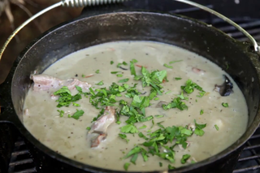

Of Herbs and Stewed Rabbits
While the origins of this recipe are fantastical, this main course wouldn't be out of place at a Sunday night dinner. The root vegetables and woodsy herb flavors are perfect for a fall night.
I did take a couple of liberties - since it is indeed the time of year here, I included the turnips, carrots and "taters" that Sam longed for. I also assumed that the hobbits might be carrying a few cooking supplies, like cooking oil, salt, pepper, and - perhaps most optimistically - chicken bouillon cubes. Finally, I thickened the stew with flour. Wandering hobbits would have had access to lembas bread, however I had to make do with what I had.
Rabbit looks similar to chicken thighs, but the flavor is richer and gamier and the texture is a little more stringy. Still, skinless bone-in chicken thighs make a good substitute for the rabbit in this recipe.
Ingredients
- 1 rabbit (2-2.5 lb) or equivalent weight skinless bone-in chicken thighs
- 3 bay leaves
- 5 sprigs thyme, woody stems removed, minced finely
- 25-30 sage leaves
- 1-2 small turnips
- 2 carrots
- 1-2 red potatoes
- 1/2 tsp freshly ground black pepper
- 3 tbsp cooking oil
- 1 portion finely crumbled lembas, or 3 tbsp flour
- About 4 cups chicken broth
- Salt, to taste
Steps
- Remove the giblets from the rabbit and mince very finely, then set aside.
- Cut up the rabbit with a sharp knife. Remove the forelegs, which are not attached to the body by bone. Remove the hindlegs at the pelvis joint by first snapping the ball-and-socket joint backwards. Chop along the spine to separate the two halves of the rib cage, then chop each side into thirds.
- Peel the carrots and slice into half-inch rounds. Peel the potatoes and turnips and chop into half-inch chunks.
- In a dutch oven, heat the cooking oil over medium-high heat. Working 3-4 pieces at a time, brown both sides of each rabbit piece and set aside.
- Brown the carrot, turnip and potato in the remaining oil. Don't stir too much - you want to form a golden crust.
- Bring the heat down to medium, then sprinkle the flour over the vegetables. Toss well to mix the flour and residual oil together. Cook for 1-2 minutes, or until the flour turns a dark blonde color.
- Pour in 1 cup of the chicken broth, and scrape the bottom of the pan to loosen the flavorful brown fond.
- Stir in the thyme, sage, bay leaves and pepper, then return the rabbit to the pot. Top up with additional chicken stock until everything is covered.
- Bring the stew to a boil, then lower to a simmer. Cover and cook for 60-90 minutes, or until the meat is tender. Stir in the finely minced giblets and cook for 2 -3 minutes more. Taste for salt and fish out the bay leaves before serving.
- Enjoy! (note: it goes perfect with a bottle of Old Winyards)
Return to top
Return to main page